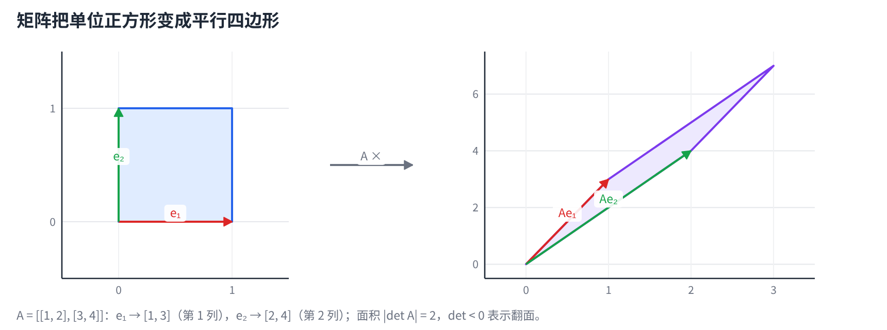
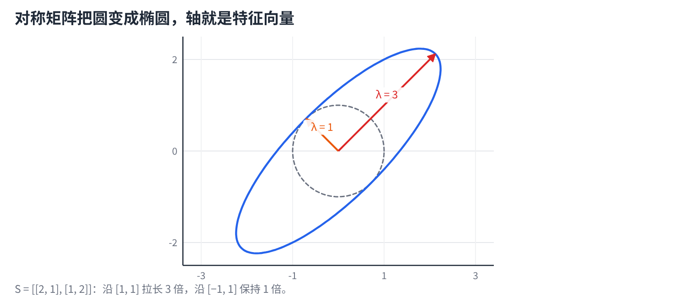
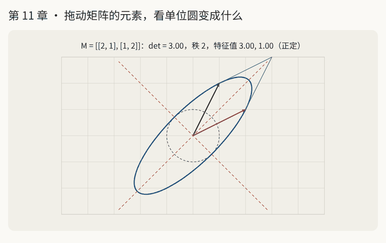

第 11 章 · 线代一：矩阵乘法的三种看法、秩、特征分解与正定
本地运行
git clone https://github.com/wikieden/math-and-eval-stats
cd math-and-eval-stats/code/notebooks
pip install jupyterlab torch numpy
jupyter lab ch11_linear_algebra_basics.ipynb也可以下载后直接用 VS Code 打开 .ipynb 运行。需要 GPU 的章节在 Colab 里选「代码执行程序 → 更改运行时类型 → GPU」。
本章回答：同一个矩阵乘法，为什么有时候看成"点积表"、有时候看成"列的组合"、有时候看成"秩 1 矩阵之和"？矩阵的秩、特征值、正定在机器人和深度学习里各管什么？
讲解日期：2026-11-25 · 上一章：第 10 章 信息论 · 下一章：第 12 章 线代二
对应原文：MMLmaterials/text/books/mml-book.txt§2.2 矩阵 L1093 起、§2.6 基与秩 L2403 起、§2.7 线性映射 L2626 起、§4.2 特征值 L5709 起、§4.4 特征分解 L6000 前后（目录 L59）
本章缩写：rank = 秩（独立方向的个数）；det = determinant（行列式：面积 / 体积的缩放倍数）；λ（lambda）= 特征值；Q、Λ = 特征向量矩阵、特征值对角阵；PD / PSD = Positive Definite / Positive Semi-Definite（正定 / 半正定）；e₁、e₂ = 标准基向量。全部缩写见 附录 · 缩写与术语表
讲解
第一步：矩阵乘法的三种看法（2026-11-25）
类比：同一张账单，可以按"每个人花了多少"看，也可以按"每类东西花了多少"看。 数字一样，看法不同，各自适合不同的问题。
A = [[1, 2], [3, 4]]，B = [[5, 6], [7, 8]]，C = AB = [[19, 22], [43, 50]]：
| 看法 | 写法 | 例子 | 什么时候用 |
|---|---|---|---|
| ① 点积表 | \(C_{ij} = A\) 的第 i 行 · B 的第 j 列 | \(C_{11} = 1\cdot5 + 2\cdot7 = 19\) | 注意力分数 \(QK^\top\)：每对 (query, key) 一个点积 |
| ② 列的组合 | C 的第 j 列 = A 的各列按 \(B_{:,j}\) 加权求和 | 第 1 列 = 5·[1, 3] + 7·[2, 4] = [19, 43] | \(Ax\) = A 的列按 x 混合；注意力的输出 = V 的行按权重混合 |
| ③ 外积之和 | \(C = \sum_k A_{:,k}\,B_{k,:}\) | [1,3]⊗[5,6] + [2,4]⊗[7,8] | 秩 1 分解、LoRA（第 12 章）、反向传播的 \(\nabla W = \sum x\,\delta^\top\) |
三种算法结果完全一样（代码核对）。
一句话：矩阵乘法 = 点积表 = 列的加权组合 = 秩 1 矩阵之和；看问题需要哪种就用哪种。
第二步：矩阵就是线性映射：看它把基向量送到哪（2026-11-25）
类比：知道一台机器怎么处理"红色原料"和"蓝色原料"，就知道它怎么处理任何红蓝混合的原料。
矩阵 A 的第 j 列 = A 把第 j 个基向量 \(e_j\) 送到的地方（MML §2.7 L2626 起）。任意向量 \(x = x_1e_1 + x_2e_2\)，\(Ax = x_1(Ae_1) + x_2(Ae_2)\)：线性映射完全由它对基向量的作用决定。
例子：
| 矩阵 | e₁ → | e₂ → | 行列式 |
|---|---|---|---|
| 旋转 90° | [0, 1] | [−1, 0] | 1（面积不变） |
| A = [[1, 2], [3, 4]] | [1, 3] | [2, 4] | −2（面积放大 2 倍、翻面） |

图 11-1 · 左：单位正方形和 e₁、e₂；右：A 作用后变成以 [1, 3]、[2, 4] 为边的平行四边形，面积 |det A| = 2一句话：矩阵的列 = 基向量被送到的地方；行列式 = 面积（体积）的缩放倍数，负号表示翻面。
第三步：秩：有几个独立的方向（2026-11-25）
类比：三个人给你指路，两个人说的其实是同一个方向，那你只得到了两个方向的信息。
秩 = 列（或行）里线性无关的最大个数（MML §2.6 L2403 起）。秩不满时，有一些非零向量被压成 0，构成零空间。
例子：M3 = [[1, 2, 3], [2, 4, 6], [1, 0, 1]]，第 2 行 = 2 × 第 1 行：
- 秩 = 2；
- 零空间方向 v = [1, 1, −1]：M3·v = [0, 0, 0]。
在哪见过：机械臂雅可比的秩掉下来 = 奇异位形（某个方向的末端速度做不出来，第 13 章）；LoRA 只学低秩的增量（第 12 章）；\(QK^\top\) 的秩不超过头维度 \(d_k\)（第 37 章）。
一句话：秩 = 独立方向的个数；秩不满就有零空间，某些方向被压没了。
第四步：特征分解：对称矩阵 = 转过去、拉伸、转回来（2026-11-25）
类比：揉面团。 不管怎么揉，总有几个方向只是被拉长或压扁、方向不变，这些方向就是特征向量，拉伸的倍数就是特征值。
Q 的列是互相垂直的单位特征向量，Λ 是特征值对角阵（MML §4.2、§4.4）。
例子：S = [[2, 1], [1, 2]]：
| 特征值 | 特征向量 |
|---|---|
| 1 | [−0.707, 0.707]（沿 [−1, 1]） |
| 3 | [0.707, 0.707]（沿 [1, 1]） |
好处：幂次变简单：\(S^{10} = Q\Lambda^{10}Q^\top\)，只要把特征值各自 10 次方：3¹⁰ = 59049、1¹⁰ = 1，得到 [[29525, 29524], [29524, 29525]]，和直接乘 10 次一样。线性系统 \(x_{k+1} = Sx_k\) 稳不稳定，就看特征值的绝对值是否都小于 1（第 21 章）。

图 11-2 · 单位圆经 S 映射成椭圆；长轴沿 [1, 1]、长 3，短轴沿 [−1, 1]、长 1一句话：对称矩阵 = QΛQᵀ：沿特征向量方向拉伸特征值倍；幂次、稳定性都看特征值。
第五步：正定与二次型：碗是不是朝上（2026-11-25）
类比：碗口朝上能盛水，马鞍形盛不住。 二次型 \(x^\top Mx\) 对所有非零 x 都 > 0，就叫正定：函数 \(\frac12x^\top Mx\) 是一个朝上的碗，只有一个最低点。
对称矩阵正定 ⇔ 特征值全部 > 0（半正定：≥ 0）。
例子（x = [1, −1]）：
| 矩阵 | 特征值 | \(x^\top Mx\) | 形状 |
|---|---|---|---|
| S = [[2, 1], [1, 2]] | 1, 3 | 2 | 碗（正定） |
| [[1, 2], [2, 1]] | −1, 3 | −2 | 马鞍（不定） |
在哪见过：协方差矩阵一定半正定（第 9 章）；损失函数在最小点的 Hessian 半正定（第 14 章）；QP 的 P 矩阵半正定才是凸问题（第 15 章）；LQR 的代价权重 Q、R（第 25 章）。
场景代码：判断正定最快的办法是试着做 Cholesky 分解（NumPy 的真实写法）：
import numpy as np
def is_pd(m):
try:
np.linalg.cholesky(m) # 只有对称正定矩阵才能分解成 L Lᵀ
return True
except np.linalg.LinAlgError:
return False
一句话：正定 ⇔ 特征值全正 ⇔ 二次型是朝上的碗；协方差、凸 QP、LQR 权重都要求它。
动画演示：拖动矩阵的元素，看单位圆变成什么

可交互版：animations/11-linear-algebra-basics.html（四个滑块调矩阵元素）。
怎么看：
- 灰色单位圆和网格被矩阵映射成椭圆和斜网格；两根彩色箭头是 Ae₁、Ae₂，就是矩阵的两列（第二步）；
- 右上角显示行列式和秩；把矩阵调成两列共线，平行四边形压扁成一条线，秩变 1（第三步）；
- 对称矩阵时，椭圆的两根轴（虚线）就是特征向量，轴长是特征值的绝对值（第四步）；
- 有负特征值时右上角标"不定"（第五步）。
练习与作答记录
题 1（第一步）：A = [[2, 0], [1, 3]]，x = [1, 2]。用"列的组合"的看法写出 Ax，并算出结果。
作答：（待作答）
题 2（第三、四步）：矩阵 [[4, 2], [2, 1]] 的秩是多少？它的特征值是多少？（提示：先看两列的关系）
作答：（待作答）
题 3（第五步）：协方差矩阵 [[1, ρ], [ρ, 1]] 的特征值是多少？ρ 取什么范围时它是正定的？
作答：（待作答）
口诀
乘法三种看：点积表、列的组合、外积相加；
列是基向量的去处，行列式是面积的倍数；
秩是独立方向数，秩不满就有零空间；
对称矩阵转拉转，特征值全正才是朝上的碗。
本章复习卡片
ST49（矩阵乘法的三种看法和各自的用处）、ST50（秩与零空间）、ST51（对称矩阵的特征分解、正定的判据）。练习做完后，按答错、卡住的地方补上。
附录 · 延伸阅读
留给以后深入学习用，不影响本章主线。★ 是建议先读的。
推荐阅读
| 读什么 | 读哪里 | 读它为了什么 |
|---|---|---|
| ★ MML | §2.2 L1093 起；§2.6–2.7 L2403–L3327 | 矩阵运算、基与秩、线性映射的严格定义 |
| ★ MML | §4.1–4.4（目录 L48–L59） | 行列式、特征值、Cholesky、特征分解 |
Matrix Cookbook（materials/text/books/matrix-cookbook.txt） |
特征值、正定一节 | 常用恒等式速查 |
| 3Blue1Brown《线性代数的本质》（视频，本地未归档） | 第 3–4、13–14 集 | 线性映射和特征向量的几何直觉 |
数学原理
- 列的组合：\((AB)_{:,j} = A\,B_{:,j} = \sum_k B_{kj}A_{:,k}\)，就是"A 作用在 B 的第 j 列上"。
- 秩–零化度定理：n 列的矩阵，rank + dim(零空间) = n。M3 是 3 列、秩 2，零空间是 1 维。
- 谱定理：实对称矩阵一定能正交对角化，特征值都是实数，不同特征值的特征向量互相垂直。
- 二次型与特征值：\(x^\top Sx = \sum_i\lambda_i(q_i^\top x)^2\)，所以特征值全正时对所有非零 x 都为正。
公式清单
| 公式 | 意思 |
|---|---|
| \(C_{ij} = A_{i,:}\cdot B_{:,j}\)；\(C = \sum_k A_{:,k}B_{k,:}\) | 矩阵乘法的点积看法和外积看法 |
| \(Ae_j = A_{:,j}\) | 列 = 基向量的像 |
| rank + nullity = n | 秩–零化度 |
| \(S = Q\Lambda Q^\top\)，\(S^k = Q\Lambda^kQ^\top\) | 对称矩阵的特征分解 |
| 正定 ⇔ 所有 \(\lambda_i > 0\) | 正定判据 |
代码对照：把本章的数字用代码算一遍
代码在仓库本地
math-and-eval-stats/solutions/chapter-code/ch11_linear_algebra.py，配套测试tests/test_ch11.py：
bash cd math-and-eval-stats/solutions/chapter-code uv run python ch11_linear_algebra.py uv run pytest tests/test_ch11.py
讲义 ↔ 代码：
| 讲义 | 公式 | 写法 | 跑出来 |
|---|---|---|---|
| 第一步 三种看法 | 点积 / 列 / 外积 | matmul_dot、matmul_columns、matmul_outer |
都是 [[19, 22], [43, 50]] |
| 第二步 线性映射 | \(Ae_j\) | rotation(90) @ [1, 0]、np.linalg.det(A) |
[0, 1]；−2 |
| 第三步 秩 | rank、零空间 | np.linalg.matrix_rank(M3)、null_vector(M3) |
2；[1, 1, −1] |
| 第四步 特征分解 | QΛQᵀ | np.linalg.eigh(S)、power_by_eig(S, 10) |
1, 3；[[29525, 29524], …] |
| 第五步 二次型 | xᵀMx | quadratic_form(m, [1, −1]) |
2 / −2 |
关键几行：
sum(np.outer(a[:, k], b[k]) for k in range(a.shape[1])) # 外积之和
v = np.linalg.svd(m)[2][-1] # 零空间：最小奇异值的右奇异向量
lam, q = np.linalg.eigh(s) # 对称矩阵用 eigh：特征值从小到大、实数
q @ np.diag(lam**k) @ q.T # S^k
代码里才看得到的 3 件事：
- 对称矩阵用
eigh不用eig：eigh保证特征值是实数、特征向量正交，而且按从小到大排；eig对一般矩阵，可能给出复数和不排序的结果。 - 特征向量的符号不唯一：[−0.707, 0.707] 和 [0.707, −0.707] 都对；比较结果时要允许整体取负。
- 秩用 SVD 判：
matrix_rank数的是"大于一个小门槛的奇异值个数"，浮点误差不会让秩 2 的矩阵被误判成秩 3。
自己改一改（不影响练习答案）：
- 把
rotation的角度改成 45°，算它的特征值（会是复数，为什么？）。 - 把 M3 的第 3 行改成 [1, 0, 2]，秩变成多少？零空间还在吗？